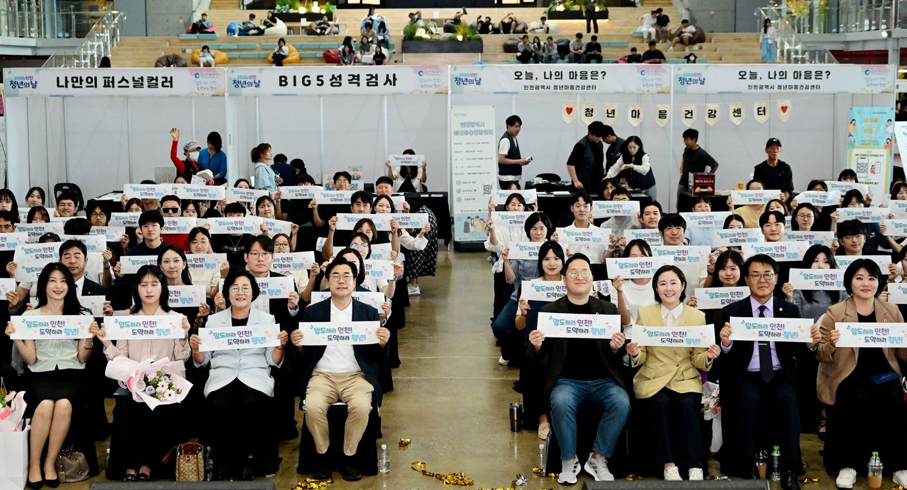
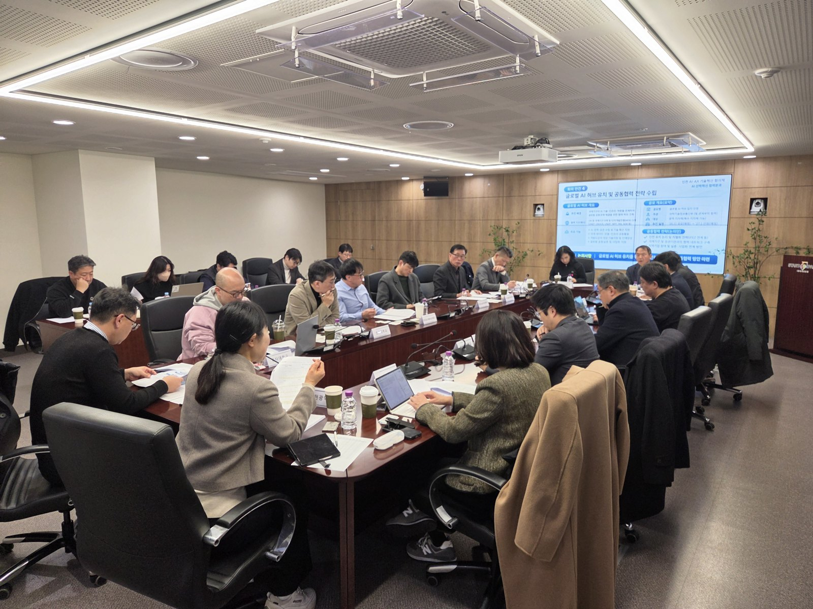

[AI 노동시장②] AI 노출 직업에서 줄어든 청년 몫과 임금
청년 고용 비중 1.27%포인트·임금 3.6% 더 감소
고노출 일자리 증가분 80.8% 경인경제권
AI경제저널=김갑봉 기자 | 한국은행 경남본부가 11월 12일 「AI 지수 유형별 경남지역 노동 수요 변화 분석과 정책적 시사점」을 공개했다. 방형준 한국노동연구원 선임연구위원, 이환웅 건국대 경제학과 조교수, 이동훈 한국은행 경남본부 과장이 쓴 외부연구용역 보고서다.
보고서는 AI 노출도가 가장 높은 직업에서 전체 고용이 뚜렷하게 줄지 않았다고 분석했다. 다만 노출도가 가장 낮은 직업보다 청년 고용 비중은 1.27%포인트 더 줄었다. 청년 임금은 3.6% 더 떨어졌다.
일자리가 늘어난 곳도 한쪽으로 몰렸다. 한국은행 조사국 이슈노트를 보면 2023년 이후 3년 동안 늘어난 생성형 AI 고노출 일자리 80.8%가 경인경제권(서울·인천·경기)에서 나왔다.
고노출 직업 총고용 유지
AI 노출도는 AI가 그 직업 업무에 쓰일 수 있는 정도를 잰 지수다. 직업 특성과 AI가 해낼 수 있는 업무 특성을 견줘 만든다. 노출도가 높다고 일자리가 곧바로 사라진다는 뜻은 아니다.
연구진은 지역별고용조사 원자료로 2021년 상반기부터 2025년 하반기까지 10개 반기를 분석했다. 10개 반기를 합친 취업자 표본은 251만5687명이다. 임금은 임금노동자가 받은 최근 3개월 월평균임금을 썼다.
기준 시점은 챗GPT가 나온 2022년 11월이다. 연구진은 직업을 노출도에 따라 네 구간으로 나누고, 노출도가 가장 낮은 구간을 비교 집단으로 삼았다. 결과 수치는 실제 변화 폭이 아니라 비교 집단과 벌어진 차이다.
노출도 2·3·4구간 모두 총고용은 비교 집단과 뚜렷한 차이가 없었다. 연구진은 같은 방법으로 미국 자료를 분석한 첸 등(2025)도 고노출 직업 실업률에 뚜렷한 변화가 없었다고 적었다.

줄어든 청년 고용 비중
직업 안 나이 구성은 달라졌다. 노출도 최상위 직업에서 15~29세 청년 비중이 비교 집단보다 평균 1.27%포인트 더 줄었다. 청년 수를 40~50대 수로 나눈 비율도 더 줄었다.
이 직업군 청년 비중은 2021년 상반기 17.7%에서 2022년 하반기 17.1%로 내려왔다. 그 뒤 13.4%까지 3.7%포인트 떨어졌다. 노출도 최하위 직업을 섞어 AI 확산 전 흐름을 맞춘 비교 집단은 11.6%에서 9.4%로 2.2%포인트 내렸다.
고노출 직업 고용 증가는 40~50대와 60세 이상에 몰렸다. 연구진은 고용이 유지되거나 늘었지만 청년층은 그 몫을 나눠 받지 못했다고 해석했다.
연구진은 청년이 하던 일을 중장년이 넘겨받았는지는 지금 자료로 검정하기 어렵다고 밝혔다. 다만 고용이 늘어난 혜택이 나이에 따라 고르지 않게 나뉘었다는 해석은 가능하다고 적었다.
청년만 낮아진 임금
청년 신규 진입이 줄면 저임금 진입자가 빠져 평균임금이 오히려 오를 수 있다. 그래서 연구진은 나이대를 고정하고 임금 효과를 다시 따졌다. 노출도 최상위 직업 청년 임금은 비교 집단보다 3.6% 더 떨어졌다.
30대는 0.2%, 40~50대는 0.5% 낮아 사실상 변화가 없었다. 60세 이상은 4.5% 낮게 추정됐지만 통계로 의미 있는 차이는 아니었다.
전체 평균임금에서는 효과가 보이지 않았다. 연구진은 다른 나이대 임금이 안정돼 청년 임금 하락이 묻혔기 때문이라고 설명했다.
노동시간은 AI 노출도와 뚜렷한 관계가 없었다. 연구진은 조정이 노동시간이 아니라 신규 채용과 임금으로 이뤄졌을 가능성이 크다고 봤다.
경인경제권 쏠린 일자리 증가
김보성 한국은행 조사국 지역경제조사팀 차장 등은 9월 15일 BOK 이슈노트 「AI와 지역 노동시장」에서 지역별 차이를 따졌다. 생성형 AI 노출도는 서울이 가장 높았고 세종, 경기, 인천이 뒤를 이었다.
경인경제권 취업자 가운데 전문가는 28.1%, 사무직은 20.2%다. 비경인경제권은 18.0%, 15.8%다. 생성형 AI 노출도가 높은 일자리가 경인경제권에 더 많다.
2023년 이후 3년 동안 생성형 AI 고노출 일자리는 24만7000명 늘었다. 이 가운데 19만9000명(80.8%)이 경인경제권에서 늘었다.
목표를 주면 여러 단계 작업을 스스로 해내는 에이전트형 AI도 흐름이 비슷했다. 이 AI 고노출 직군에서 2025년 늘어난 10만5000명 가운데 88.3%가 경인경제권이었다.
실질임금도 갈렸다. 2025년 경인경제권에서는 에이전트형 AI 고·중노출 일자리 임금 상승폭이 저노출 일자리보다 컸다. 비경인경제권 고·중노출 일자리 임금은 제자리이거나 조금 내렸다.
20대는 달랐다. 고노출 직업 20대 취업자는 경인경제권과 비경인경제권 모두 줄었다. 집필진은 대학교육이 전통적인 지식 축적에 초점을 둬 청년이 전문성과 경험을 갖추기가 지역과 상관없이 어렵다고 풀이했다.
경남 저노출·고보완 구조
경남 평균 AI 노출도는 51.42로 국내 평균보다 2.60 낮다. AI 보완도는 55.11로 4.24 높다. 보완도는 AI가 사람 일을 대신하기보다 도와 생산성을 높이는 정도다.
연구진은 이 차이 대부분이 경남 산업 구성, 곧 제조업과 농업 비중에서 나온다고 분석했다. 경남 AI 준비도는 17개 시도 가운데 12위였다.
AI 숙련을 갖춘 신규 취업자 비중은 15위, AI 연구개발 국비 지원액은 14위였다. 연구진은 세미나 발표자료에서 피지컬 AI 등 제조업 특화 AI 도입을 지원해 청년 일자리를 늘리는 정책을 제안했다.
연구진은 청년 비중 감소를 모두 생성형 AI 효과로 돌리는 데 신중했다. AI 확산 전 비교 기간이 4개 반기뿐이고 코로나19 뒤 고용 회복기와 겹친다는 점을 들었다. 노출도 높은 직업에 정형화된 일이 많아 기존 자동화 흐름과 가르기 어렵다는 점도 짚었다.

이슈노트 집필진도 지역별 분석이 AI 확산 초기 징후여서 AI가 고용 변화 원인이라고 단정하기 어렵다고 적었다. 집필진은 지역 서비스업 AI 교육 강화와 지역 거점대학 AI 허브화를 정책 과제로 꼽았다.
참고문헌
- 「한국은행 경남본부와 창원상공회의소, 「AI 대전환 시대, 경남의 선택」을 주제로 지역경제 세미나 개최」, 한국은행 경남본부 보도자료, 2026년 11월 3일, https://www.bok.or.kr/portal/bbs/P0000720/view.do?nttId=11066178&menuNo=200570
- 방형준·이환웅·이동훈, 「AI 지수 유형별 경남지역 노동 수요 변화 분석과 정책적 시사점」, 한국은행 경남본부 조사연구자료(2026-2-경남본부), 2026년 10월 16일 작성·11월 12일 공개, https://www.bok.or.kr/portal/bbs/P0000800/view.do?nttId=11066564&menuNo=201087
- 방형준·이환웅, 「AI와 경남 노동시장: 현황과 과제」(2026 한국은행 경남본부 지역경제 세미나 발표자료), 2026년 11월 3일, 위 보고서 게시물 첨부
- 김보성·정민수·정유정·장수빈, 「AI와 지역 노동시장 - 지역간 격차 확대 위험과 새로운 기회」, BOK 이슈노트 제2026-25호, 한국은행, 2026년 9월 15일, https://www.bok.or.kr/portal/bbs/P0002353/view.do?nttId=11064752&menuNo=200433
[사진 출처]
- 「좋은 일자리에서 안정된 삶까지…인천, 청년이 머무는 도시로」, 인천광역시 보도자료 붙임 사진, 2026년 11월 10일, https://www.incheon.go.kr/IC010205/view?repSeq=DOM_0000000015937664
- 「인천시, 지역 13개 대학과 '글로벌 인공지능(AI) 허브' 유치 전략 모색」, 인천광역시 보도자료 붙임 사진, 2026년 11월 20일, https://www.incheon.go.kr/IC010205/view?repSeq=DOM_0000000016054113
※ 이 기사는 인공지능기자 위민아이(Wemin_AI)와 협력해 작성했습니다.
관련기사
- [AI 노동시장①] AI 노출 업종에서 좁아진 청년 첫 일자리
- 2분기 임금일자리 40만6000개 증가, 20대 이하 5만6000개 감소
- [고용 브리핑] 청년층 고용률 42.9%, 1년 새 1.7%포인트 하락
- 청년 많이 일하는 100곳, 장시간 노동·공짜 야근 감독 받는다
저작권자 © AI경제저널 무단전재 및 재배포, AI학습 및 활용 금지